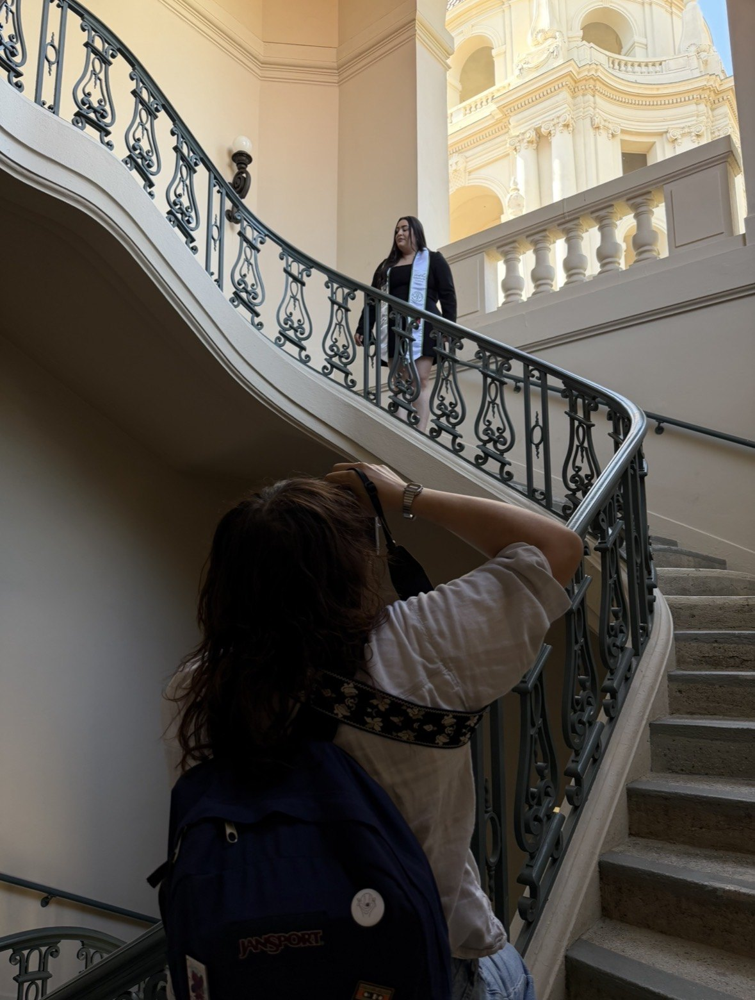

Hope Diana
Jimenez
Photography, film, and the little moments
that bring people together.
a collection of little moments

a little glimpse behind the lens. ↗LOOK A LITTLEcloser.
HOPE DIANACONTACT SHEET / VOL. 01
01 / THROUGH MY LENS
A few favorites.
360°hopescope
01 / FILM FESTIVAL / 2026
Global Stage Hollywood Film Festival 2026
03 FRAMES / click to look closer
02 / CONFERENCE / 2026
Women in Media Production Conference 2026
03 FRAMES / click to look closer
03 / PORTRAITS
Graduation portraits
05 FRAMES / click to look closer
03 / BEHIND THE CAMERA
Hey,
I’m Hope!
I’m drawn to photography, film, and social media that brings people together.
When I’m not at an AMC movie theater, you can find me at Cal State LA working toward my B.A. in Film and a minor in Marketing. Born and raised in Los Angeles, I love blending humor, curiosity, and personality into content that builds community. From the color storytelling in La La Land to Marvel fandoms and queer representation in horror, I love the intricate details that help people feel connected. And that’s exactly what I HOPE to create: stories that spark connection.
Get in touch ↗“'Cause love's such an old-fashioned word.”
— David Bowie
Queen & David Bowie, “Under Pressure”
YOUR FINISHED PHOTOGRAPHS / ALL IN ONE PLACE
04 / A NOTE TO HOPE
Let’s make
memories.
[Have a project in mind? Tell me a little about it here.]
hopescopestudios@gmail.com ↗ELSEWHERE ON THE INTERNET